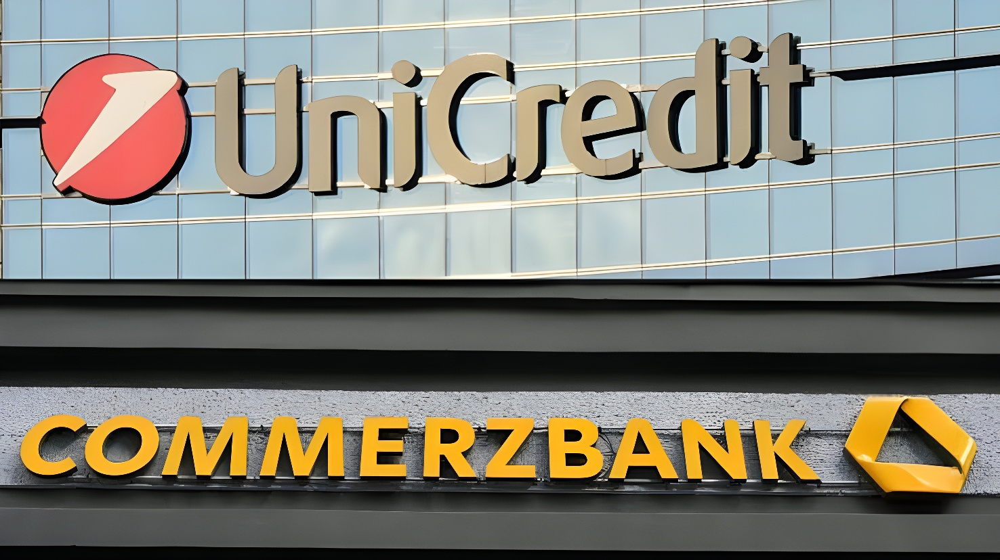

Après des mois de résistance affichée, le gouvernement allemand assouplit sa position face à la montée en puissance de la banque italienne UniCredit au capital de Commerzbank, désormais aux portes de la majorité. Le ministre fédéral des Finances Lars Klingbeil a invité le directeur général d'UniCredit, Andrea Orcel, à Berlin le 14 septembre 2026 — un geste inédit qui ouvre la voie à une possible consolidation bancaire transfrontalière au sein de la zone euro.
Tout commence en septembre 2024, lorsque UniCredit rachète à l'État allemand une participation de 9 % dans Commerzbank lors d'une cession aux enchères, puis sécurise un instrument financier lui donnant accès à 11,5 % supplémentaires. Le mouvement, mené par le directeur général Andrea Orcel, surprend Berlin et ouvre une période de tensions durables entre les deux établissements. En mars 2026, UniCredit lance une offensive non sollicitée pour porter sa participation au-delà du seuil symbolique de 30 %.
En juillet 2026, alors que la participation d'UniCredit avoisine 50 % du capital, le gouvernement allemand qualifie encore publiquement l'approche italienne d'« agressive et hostile ». Ce climat de défiance a nourri une relation compliquée entre Andrea Orcel et la directrice générale de Commerzbank, Bettina Orlopp, farouchement opposée à son projet de réduire fortement le réseau international de la banque allemande — un différend qui a conduit le dirigeant italien à évoquer publiquement la possibilité de remplacer l'équipe dirigeante en place.
UniCredit rachète une participation de 9 % de l'État allemand aux enchères et sécurise un instrument financier portant sa position potentielle à 20,5 %, provoquant l'inquiétude de Berlin.
UniCredit lance une offensive non sollicitée pour dépasser le seuil des 30 % de participation dans Commerzbank.
Le gouvernement allemand qualifie l'approche italienne d'« agressive et hostile » ; la participation d'UniCredit avoisine 50 % du capital.
Jens Weidmann, président du conseil de surveillance de Commerzbank, reconnaît que le rapport de force est établi et évoque un dialogue « constructif » ; premiers échanges formels entre Andrea Orcel et Bettina Orlopp.
Reuters révèle que Lars Klingbeil a invité Andrea Orcel à Berlin, signe tangible de l'assouplissement de la position gouvernementale.
Rencontre prévue entre Lars Klingbeil et Andrea Orcel au ministère fédéral des Finances, à Berlin.
L'invitation lancée par le vice-chancelier et ministre des Finances Lars Klingbeil marque une rupture nette avec la ligne suivie jusqu'ici par l'exécutif fédéral. Selon des sources gouvernementales citées par Reuters, le ministre entend exposer la position de Berlin, insister sur le rôle de Commerzbank dans le financement des PME allemandes (le Mittelstand) et défendre le poids de la place financière de Francfort, avant toute décision sur l'avenir de la participation publique de 12,7 %.
Un porte-parole du gouvernement a toutefois tenu à tempérer la portée du geste, précisant que le chancelier Friedrich Merz n'envisageait pas de rencontrer lui-même les dirigeants d'UniCredit, laissant le dossier entre les mains de son ministre des Finances — une répartition des rôles qui illustre la prudence persistante de Berlin malgré l'ouverture au dialogue.
| Acteur | Position |
|---|---|
| Lars Klingbeil | Ouverture au dialogue direct, sans engagement sur la vente de la participation |
| Bettina Orlopp | Se dit prête à des discussions constructives, mais s'oppose à la réduction du réseau international |
| Andrea Orcel | Vise une intégration complète, envisage des réductions d'effectifs |
| Jens Weidmann | Reconnaît le rapport de force, demande à l'État de conserver sa participation |
| Syndicat ver.di | Rejette la prise de contrôle, craint des doublons avec HypoVereinsbank |
| BCE | Aucun motif prudentiel identifié à ce stade ; décision attendue sept.-oct. 2026 |
« Nous sommes prêts pour des discussions constructives avec UniCredit. »
— Bettina Orlopp, directrice générale de Commerzbank, août 2026Le dossier avance sur fond de résultats financiers solides : au deuxième trimestre 2026, le bénéfice net de Commerzbank a quasiment doublé, à 898 millions d'euros contre 462 millions un an plus tôt, confortant un objectif annuel maintenu à au moins 3,4 milliards d'euros et un programme de restitution de capital pouvant atteindre 3,2 milliards d'euros, incluant un rachat d'actions de 1,2 milliard. L'action Commerzbank évolue à proximité de son plus haut sur un an, tandis que le titre UniCredit progresse lui aussi près de ses sommets annuels à Milan. Un document interne de la BCE consulté par Reuters n'a par ailleurs identifié aucun motif prudentiel de s'opposer à l'opération, la décision formelle du superviseur étant attendue entre septembre et octobre 2026.
Au-delà du seul dossier Commerzbank, cette évolution de la position allemande intervient alors que la BCE et la Commission européenne appellent de longue date à des rapprochements bancaires transfrontaliers, jugés nécessaires pour absorber la hausse des coûts technologiques et réglementaires face aux géants américains et asiatiques. La situation présente une particularité : UniCredit est déjà solidement implantée en Allemagne via sa filiale HypoVereinsbank, ce qui laisse espérer des synergies locales réelles. Une fusion aboutie créerait un ensemble au bilan supérieur à 1 300 milliards d'euros — encore loin de BNP Paribas ou HSBC, mais susceptible de servir de modèle pour d'autres opérations transfrontalières en Europe. L'issue du dossier dépendra largement de la rencontre du 14 septembre : elle dira si Berlin cherche à obtenir des garanties sur l'emploi et sur le maintien de Francfort comme centre de décision avant de céder sa participation, ou si l'ouverture affichée n'est qu'un geste diplomatique préservant, pour l'instant, le statu quo.
Nach monatelangem offiziellem Widerstand lockert die Bundesregierung ihre Haltung gegenüber dem wachsenden Einfluss der italienischen Bank UniCredit am Kapital der Commerzbank, die inzwischen kurz vor der Mehrheit steht. Bundesfinanzminister Lars Klingbeil hat UniCredit-Chef Andrea Orcel für den 14. September 2026 nach Berlin eingeladen — ein bislang beispielloser Schritt, der den Weg für eine grenzüberschreitende Bankenkonsolidierung im Euroraum ebnen könnte.
Alles beginnt im September 2024, als UniCredit dem deutschen Staat bei einer Versteigerung ein 9-Prozent-Paket an der Commerzbank abkauft und sich zusätzlich über ein Finanzinstrument Zugriff auf weitere 11,5 Prozent sichert. Der von Konzernchef Andrea Orcel vorangetriebene Schritt überrascht Berlin und leitet eine Phase anhaltender Spannungen zwischen beiden Instituten ein. Im März 2026 startet UniCredit eine unaufgeforderte Offensive, um die Beteiligung über die symbolische Schwelle von 30 Prozent hinaus auszubauen.
Im Juli 2026, als die UniCredit-Beteiligung bereits nahe 50 Prozent des Kapitals liegt, bezeichnet die Bundesregierung das Vorgehen der Italiener noch öffentlich als „aggressiv und feindlich". Dieses Misstrauensklima belastet auch das Verhältnis zwischen Andrea Orcel und Commerzbank-Chefin Bettina Orlopp, die sich entschieden gegen seinen Plan wehrt, das internationale Netzwerk der Bank drastisch zu verkleinern — ein Streit, der den italienischen Manager öffentlich mit dem Austausch der Führungsriege drohen ließ.
UniCredit erwirbt bei einer Versteigerung ein 9-Prozent-Paket des Bundes und sichert sich über ein Finanzinstrument eine potenzielle Position von 20,5 Prozent — Berlin reagiert alarmiert.
UniCredit startet eine unaufgeforderte Offensive, um die 30-Prozent-Schwelle bei der Commerzbank zu überschreiten.
Die Bundesregierung bezeichnet das italienische Vorgehen als „aggressiv und feindlich"; die UniCredit-Beteiligung nähert sich 50 Prozent des Kapitals.
Aufsichtsratschef Jens Weidmann räumt ein, dass die Machtverhältnisse klar seien, und spricht von einem „konstruktiven" Dialog; erste formelle Gespräche zwischen Andrea Orcel und Bettina Orlopp.
Reuters berichtet, dass Lars Klingbeil Andrea Orcel nach Berlin eingeladen hat — ein deutliches Zeichen für die gelockerte Haltung der Regierung.
Geplantes Treffen zwischen Lars Klingbeil und Andrea Orcel im Bundesfinanzministerium in Berlin.
Die Einladung von Vizekanzler und Finanzminister Lars Klingbeil markiert einen klaren Bruch mit der bisherigen Linie der Bundesregierung. Regierungsvertretern zufolge, die sich gegenüber Reuters äußerten, will der Minister die Position Berlins darlegen, die Rolle der Commerzbank bei der Finanzierung des deutschen Mittelstands betonen und die Bedeutung des Finanzstandorts Frankfurt verteidigen, bevor über die Zukunft der 12,7-prozentigen Staatsbeteiligung entschieden wird.
Ein Regierungssprecher relativierte die Tragweite des Schritts jedoch und stellte klar, dass Bundeskanzler Friedrich Merz kein eigenes Treffen mit der UniCredit-Führung plane; das Dossier bleibe in den Händen seines Finanzministers — eine Rollenverteilung, die die anhaltende Vorsicht Berlins trotz der Gesprächsbereitschaft verdeutlicht.
| Akteur | Position |
|---|---|
| Lars Klingbeil | Offen für direkten Dialog, ohne Festlegung auf einen Verkauf der Beteiligung |
| Bettina Orlopp | Bereit zu konstruktiven Gesprächen, lehnt aber die Verkleinerung des internationalen Netzwerks ab |
| Andrea Orcel | Strebt vollständige Integration an, erwägt Stellenabbau |
| Jens Weidmann | Erkennt die Machtverhältnisse an, fordert den Bund zum Verbleib als Aktionär auf |
| Gewerkschaft ver.di | Lehnt die Übernahme ab, befürchtet Doppelstrukturen mit der HypoVereinsbank |
| EZB | Bislang kein aufsichtsrechtlicher Einwand; Entscheidung im Sept./Okt. 2026 erwartet |
„Wir sind bereit für konstruktive Gespräche mit UniCredit."
— Bettina Orlopp, Vorstandsvorsitzende der Commerzbank, August 2026Der Fall entwickelt sich vor dem Hintergrund solider Finanzergebnisse: Im zweiten Quartal 2026 hat sich der Nettogewinn der Commerzbank auf 898 Millionen Euro nahezu verdoppelt, gegenüber 462 Millionen Euro im Vorjahreszeitraum. Das bestätigte Jahresziel liegt bei mindestens 3,4 Milliarden Euro, begleitet von einem Kapitalrückführungsprogramm von bis zu 3,2 Milliarden Euro, darunter ein Aktienrückkauf über 1,2 Milliarden Euro. Die Commerzbank-Aktie notiert nahe ihrem Jahreshoch, während auch der UniCredit-Kurs in Mailand seinen eigenen Jahreshöchstständen nahekommt. Einem internen, von Reuters eingesehenen EZB-Dokument zufolge hat die Aufsicht bislang keinen aufsichtsrechtlichen Einwand gegen das Vorhaben identifiziert; die formelle Entscheidung wird zwischen September und Oktober 2026 erwartet.
Über den Fall Commerzbank hinaus fällt die gelockerte deutsche Haltung in eine Zeit, in der die EZB und die Europäische Kommission seit langem grenzüberschreitende Bankenfusionen fordern, um steigende Technologie- und Regulierungskosten im Wettbewerb mit amerikanischen und asiatischen Konzernen abzufedern. Die Ausgangslage ist besonders: UniCredit ist über ihre Tochter HypoVereinsbank bereits fest in Deutschland verankert, was echte lokale Synergien verspricht. Eine gelungene Fusion würde ein Institut mit einer Bilanzsumme von über 1.300 Milliarden Euro schaffen — noch weit hinter BNP Paribas oder HSBC, aber möglicherweise ein Modell für weitere grenzüberschreitende Zusammenschlüsse in Europa. Der Ausgang wird maßgeblich vom Treffen am 14. September abhängen: Es wird zeigen, ob Berlin Zusagen zu Beschäftigung und zum Erhalt Frankfurts als Entscheidungszentrum einfordert, bevor es seine Beteiligung abgibt — oder ob die Gesprächsbereitschaft vorerst nur eine diplomatische Geste bleibt, die den Status quo bewahrt.